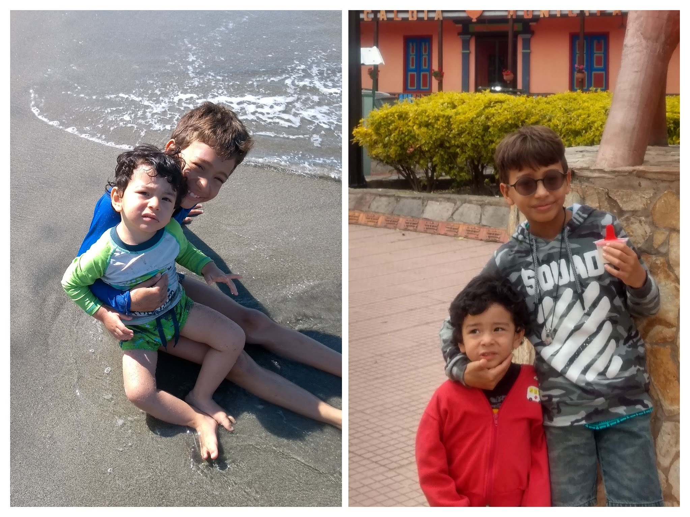

MIS HIJOS
Esta seccion deberia ser para presentarles a mi mascota, pero es por mis hijos que no tengo una, asi que mejor les presento a mis hijos, la luz de mi mundo, lo mas lindo y terrorifico que tengo.
mi hijo mayor se llama JOAN SEBASTIAN, tiene 10 años, le encanta jugar videojuegos, leer, y hacer acrobacias. mi hijo menor se llama MAXIMILIANO, tiene 2 años y medio, ama los paw patrol, tanto que ya me los se de memoria, le encanta comer e ir a cine.
no puedo tener mascotas, pero igual les voy a mostrar mi animal favorito, es un animal, que puede parecer similar a todos sus otros compañeros pero es unico, es calmado, pero indomable, es fuerte y familiar, y me encantan las cosas a blanco y negro.